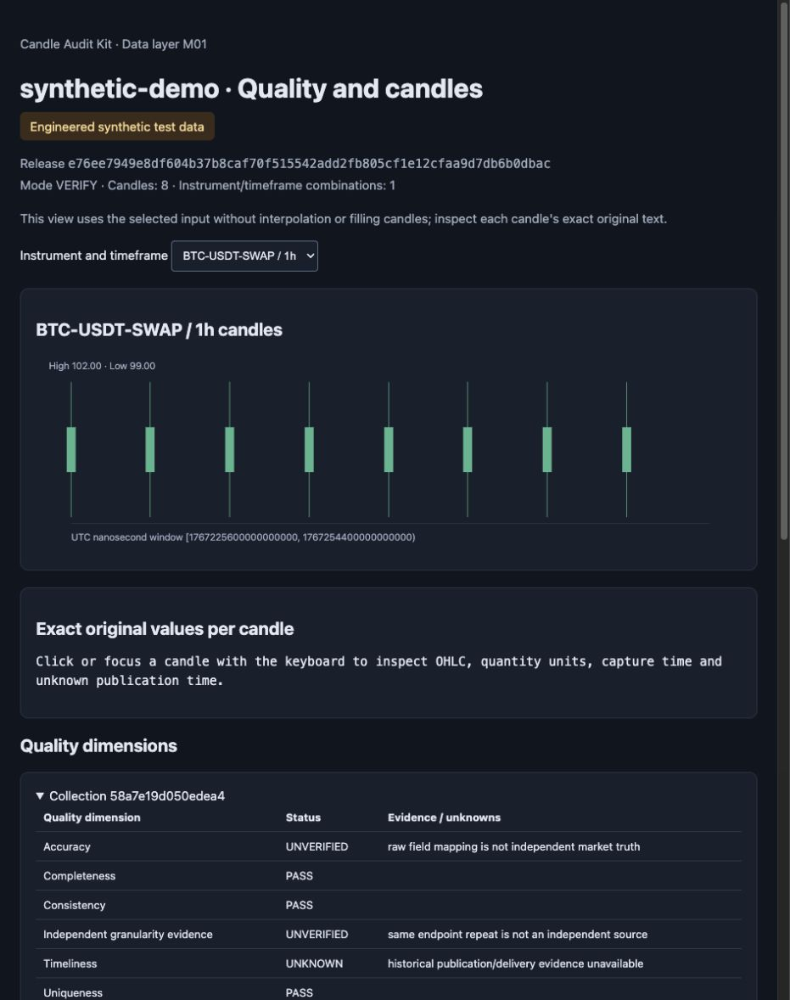

OFFLINE OHLCV DATA CHECKS
Start with a real sample report.
See eight invented candles, their exact values, and the evidence that remains unknown. Read the result before installing anything.
No install. No sign-in. A fixed synthetic preview.

Saved output from the real offline demo. Capture provenance
01 / UNDERSTAND THE RESULT
What to look for in the report
Inspect the exact input
Click a candle in the report to see its original decimal text, timestamps and quantity units. The chart uses those selected rows.
Read each evidence state
A consistency check can pass while source accuracy stays UNVERIFIED. Missing publication evidence stays UNKNOWN.
Run your own checks locally
The preview is a saved demonstration. Install the tool on your machine to run a new synthetic demo or check your own supported candle files.
02 / RUN THE CHECKS ON YOUR MACHINE
Try the local demo.
Download the candidate source ZIP, extract it, then run the commands alongside. A Git client is not required.
Download 0.1.0rc2 ZIPRelease candidate · not a stable release
Requires CPython 3.11–3.14 on macOS or Linux. First installation downloads dependencies from official PyPI; the synthetic demo runs offline.
cd candle-audit-kit-0.1.0rc2
python3.11 -m venv .venv
. .venv/bin/activate
python -m pip install --index-url https://pypi.org/simple .
candle-audit demo --root data/demo --language enExpected: SYNTHETIC_DEMO_COMPLETE, 8 rows, 2 aggregate rows, network_used: false. Open the new HTML file printed as report.html_path.
Chinese remains the default: omit --language en. Use your installed supported Python executable if it has a different name.